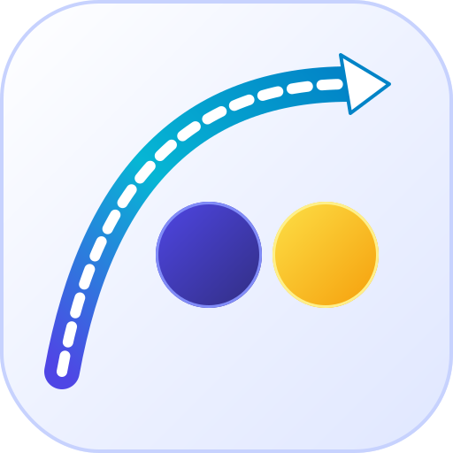
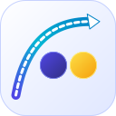
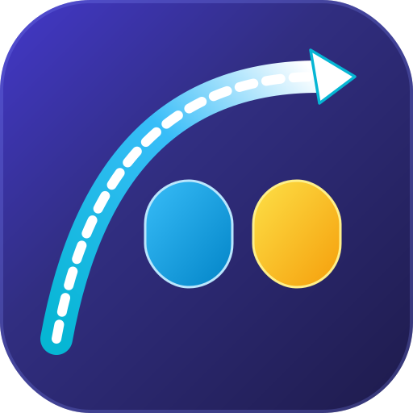
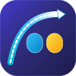
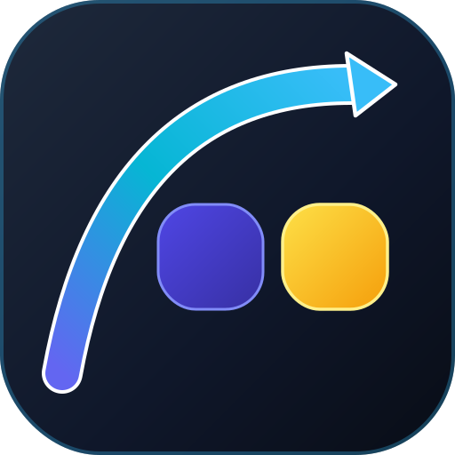
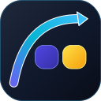

案 1 • ツインサークル ✕ ライトアイス背景 【一押し推奨】
 44px
44px
Twin Circles (Ice Frost)
清潔なホワイト〜ペールインディゴ背景に、深いロイヤルインディゴと鮮烈なゴールドの真円。超極太40pxのシアンアークが滑らかに右肩上がりに抜ける究極の純粋美。


64px
32px
- Shape: 2つの完全な円（サークル）。
- カラー: 薄い背景だからこそ映える、純粋な青と黄色の対比。
- 印象: Mastercard や Figma のような歴史に残る世界基準の美しさ。
案 2 • 縦長カプセル ✕ 深海インディゴ背景
 44px
44px
Twin Vertical Pills (Deep Indigo)
Colvioの深海インディゴ背景に、Electric Cyan（発光水色）とAmber Gold（発光黄色）の2つのカプセルピルがネオンのように輝くサイバースタイル。


64px
32px
- Shape: 2つの丸角カプセルピル（スタジアム形状）。
- カラー: ダーク背景に浮き立つ発光シアンとアンバーゴールド。
- 印象: 先進的・高機能・洗練されたプロフェッショナルツール感。
案 3 • スクワークル ✕ スレートブルー背景
 44px
44px
Twin Squircles (Slate Blue)
Apple等で愛される超楕円（スクワークル）形状に、ホワイト縁取りのソリッド極太アーク。スレートブルーの中間トーンで高級感を醸成。


64px
32px
- Shape: 超楕円スクワークル（極めて滑らかな角丸四角）。
- カラー: スレートダークに映えるロイヤルインディゴとサンバーストゴールド。
- 印象: オーガニックな柔らかさと力強いソリッド矢印の調和。